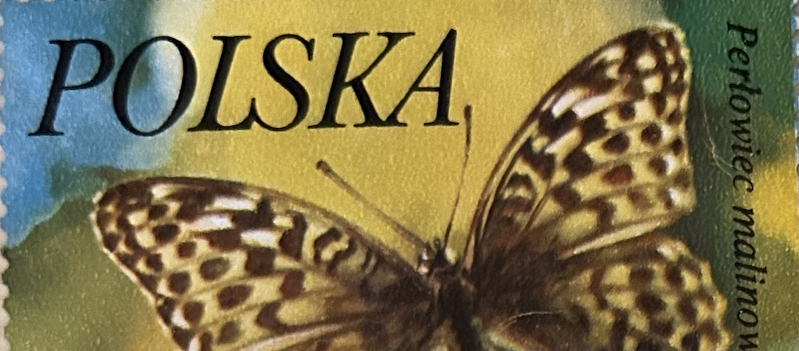
| SOURCE | TITLE| IMAGE MATCH | click to source page |
| Find Your Stamps Value | Value of polska butterfly stamps | 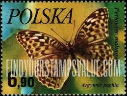 |
| iStock | Butterfly On A Polish Postage Stamp Stock Photo - Download Image Now - Air Mail, Animal, Animal Body Part - iStock | 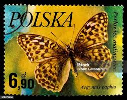 |
| Alamy | A postage stamp printed in Poland shows image of a butterfly - Argynnis paphia, circa 1980 Stock Photo - Alamy | 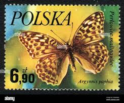 |
| Shutterstock | butterfly Stamp": Over 5,717 Royalty-Free Licensable Stock Photos | Shutterstock |  |
| Flickr | August 2013 070 | Wendy Arnold | Flickr | 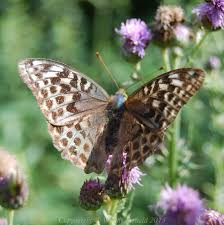 |
| | Looduskalender.ee | Colour forms of female butterflies | looduskalender.ee | 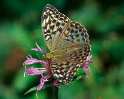 |
| 🦋 | 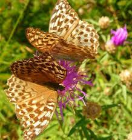 | |
| iNaturalist | Photos of Form Argynnis paphia valesina · iNaturalist | 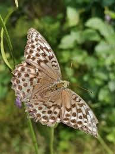 |
| Etsy | Fritillary Butterfly Print | 1960s Entomology Illustration - Etsy | 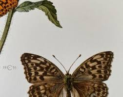 |
| eBay | Poland, 1977, Stamp 2349, Butterflies, Fabriciana Adippe, New | eBay |  |
| Canadian Wildlife Federation (CWF) | iNaturalist | 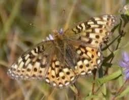 |
| Eric Roosendaal | Tiny Dynamine / Echoes In A Shallow Bay | 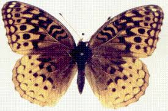 |
| Butterflies and Moths of North America | Butterfly, Moth, and Caterpillar Photographs from Montana | Butterflies and Moths of North America | 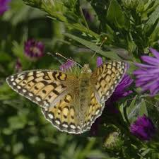 |
| A few butterflies / moths from the Wind River Mountains in WY : r/whatisthisbug | 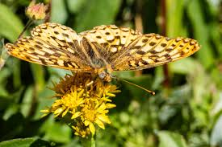 | |
| Can someone tell me which type of fritillary this is? | 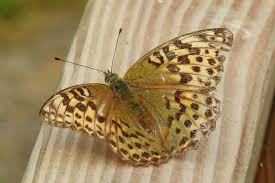 | |
| British Butterfly Aberrations | Dark Green Fritillary (Argynnis aglaja) butterfly aberrations | 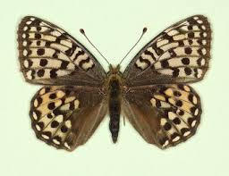 |
| Why is the Dark Green Fritillary Butterfly not green? | 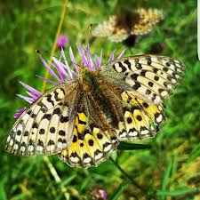 | |
| Zobodat | The Taxonomic Report | 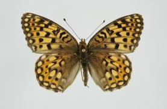 |
| Dreamstime.com | 215 Argynnis Pandora Stock Photos - Free & Royalty-Free Stock Photos from Dreamstime | 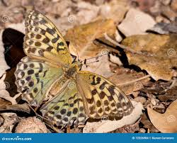 |
| Carolina Nature | Volume 7 Number 7 | 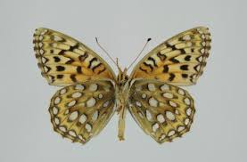 |
| Natural History Museum | Collection specimens - Specimens - Data Portal | 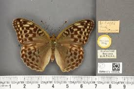 |
| Is anyone in my network based in Devon? Keen to connect with local natural world filmmakers/environmental activists - please drop me a DM if this sounds like you, I'd love to chat! | 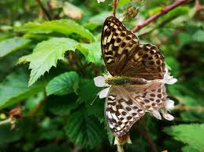 | |
| Wikipedia | Speyeria edwardsii - Wikipedia | 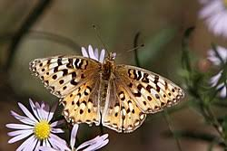 |
| Science Photo Library | Cardinal butterfly - Stock Image - C016/2223 - Science Photo Library | 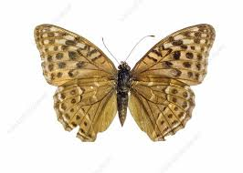 |
| I found another Melvalina Morelock | 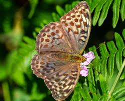 | |
| Rucking up a hill with 30 pounds | 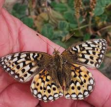 | |
| Great day at Garston and Martin down in June 2025 | 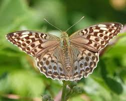 | |
| iNaturalist | Meadow Fritillary (Boloria bellona) · iNaturalist | 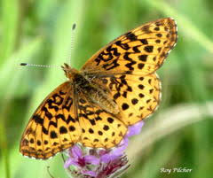 |
| A bit less wind this morning, and I managed to find a Dark Green Fritillary by scanning flower heads with a pair of binoculars :) | 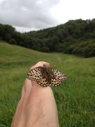 | |
| Jeff Pippen | Speyeria | 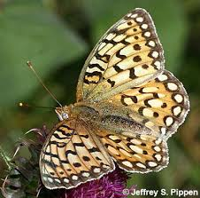 |
| WordPress.com | Mount Spokane Area Butterfly Guide | 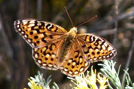 |
| Butterflies and Moths of North America | Great Basin Fritillary Speyeria egleis (Behr, 1862) | Butterflies and Moths of North America | 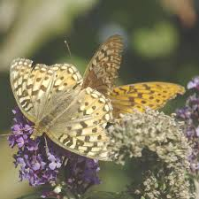 |
| Valezina Silver-Washed Fritillary,Alners Gorse 21.7.23, Thanks to Daniel Moles for your help🫶🏻 | 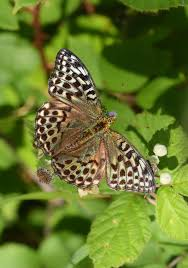 | |
| Flickr | Rachael Ehrlund | Flickr | 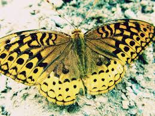 |
| Janet Sketchley | Words of Comfort | Janet Sketchley | 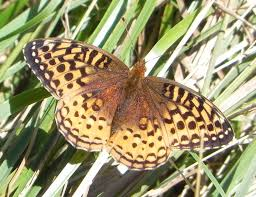 |
| maplogs.com | Elevation of Upplands-Bro V, Sweden - MAPLOGS | 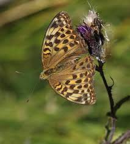 |
| mt.gov | Mormon Fritillary - Montana Field Guide | 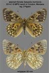 |
| iNaturalist | Rhodope Fritillary (Subspecies Argynnis hydaspe rhodope) · iNaturalist | 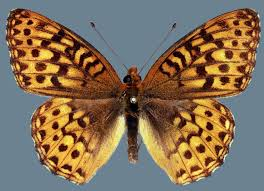 |
| insectic.com | 30 Butterfly Species in Washington - Insectic | 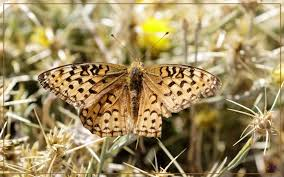 |
| Wikipedia | Brocken - Wikipedia | 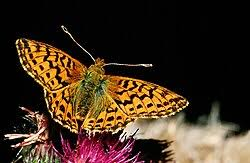 |
| Butterflies and Moths of North America | Callippe Fritillary Speyeria callippe (Boisduval, 1852) | Butterflies and Moths of North America | 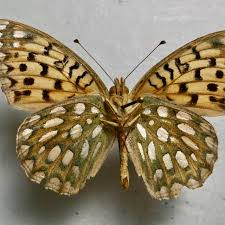 |
| Fritillary butterfly rescue and recovery story | 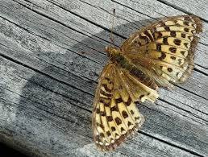 | |
| Las Pilitas Nursery | Monardella antonina, Butterfly Mint Bush. | 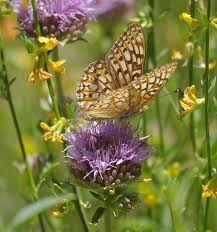 |
| Flickr | 4eyesonly | Flickr | 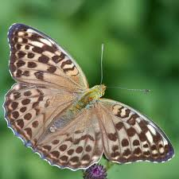 |
| Wikipedia | Boloria titania - Wikipedia | 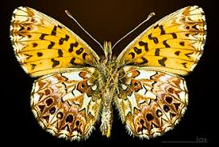 |
| Butterflies and Moths of North America | Butterfly, Moth, and Caterpillar Photographs from New York | Butterflies and Moths of North America | 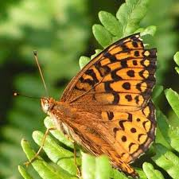 |
| Found this valezina form of female Silver-washed Fritillary near the pond in Trench Wood this morning. I think it's the first one I've managed to photograph. Lots of Purple Hairstreaks flying and | 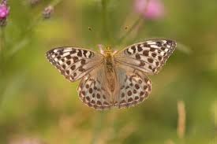 | |
| Jeff Pippen | Callippe Fritillary (Argynnis callippe) | 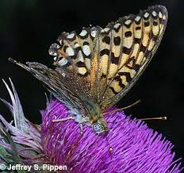 |
| mt.gov | Great Basin Fritillary - Montana Field Guide | 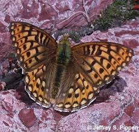 |
| iNaturalist | Argynnis zenobia · iNaturalist | 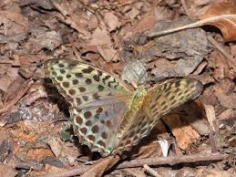 |
| What kind of butterfly loves coneflowers? | 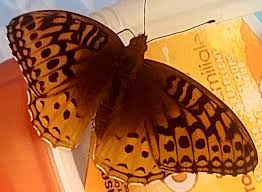 | |
| World of Butterflies and Moths | Argynnis paphia tsushimana Silver Washed Fritillary JAPAN (PH) - World of Butterflies and Moths | |
| Butterflies and Moths of North America | Relict Fritillary Boloria kriemhild (Strecker, 1879) | Butterflies and Moths of North America | |
| Stunning Valezina Silver Washed Fritillary spotted this morning at Ravensroost Woods near Swindon in Wiltshire. What a truly spectacular butterfly 😍 | ||
| Sporting some awesome wings - Fritillary here in Hiwassee Dam, NC! | ||
| Hamilton Naturalists' Club | Danielle Willer | |
| Fandom | Dark Green Fritillary | British Wildlife Wiki | Fandom | |
| Wikimedia.org | File:Argynnis paphia f.valesina female.JPG - Wikimedia Commons | |
| Dorset Butterflies | Silver-washed Fritillary and Silver-washed Fritillary f.valesina, Garston Wood | Dorset Butterflies |
{kind=link}